Sigurnost u sustavu PostgreSQL
Sadržaj |
Uvod
Područje sigurnosti kod baza podataka je širok pojam koji obuhvaća sve slučajeve kada bi baza podataka mogla biti kompromitirana. Obratiti ćemo pozornost na neke probleme kod baza podataka u sustavu PostgreSQL koji bi mogli bazu podataka ostaviti u nekonzistentnom stanju. Nadalje, implementirati primjere dodavanja novih korisnika u bazu podataka, višekorisničkog rada u sustavu PostgreSQL, pokazati upravljanje transakcijama, kako se izrađuje sigurnosna kopija baza podataka te pokazati primjere dnevnika tj. logova.
Osnovne definicije
Za početak ćemo se upoznati s osnovnim definicijama, poput definicije podatka, baze podatak i sustava za upravljanje bazom podataka. Tako je podatak skup prepoznatljivih znakova zapisanih na jednom mediju. (Prema: Varga i dr. 1998) Baza podataka (engl. database) je skup međusobno povezanih podataka, pohranjenih zajedno bez štetne ili nepotrebne (nekontrolirane) zalihosti (redundancije), s ciljem da ih koriste različite aplikacije. (Prema: Bratanović i Zakošek 2007:1). Sustav za upravljanje bazom podataka (engl. database managment system) ili skraćeno DBMS je računalni sustav čija je svrha pohranjivanje informacija i omogućuje korisnicima dodavanja novih informacija te ažuriranje postojećih. (Date, C. J., 2004).
PostgreSQL kroz povijest
Nakon što smo se upoznali sa temeljni pojmovima, sada ćemo se upoznati sa sustavom za upravljanje baza podataka PostgreSQL. PostgreSQL je objektno-relacijski sustav za upravljanje bazama podataka (ORDBMS). PostgreSQL korijene vuče od sustava POSTGRES 4.2. POSTGRES je bio istraživački projekt Američkog sveučilišta Berkley. Projekt je rezultirao istoimenim sustavom za upravljanjem baza podataka. Svrha ovog programa je pružanje temelja za daljnja istraživanja i implementaciju novih ideja u bazama podataka. Nekoliko diplomiranih studenata, djelatnika kao i studenata preddiplomskog studija sa Berkeleyja doprinijeli su implementaciji POSTGRES softwarea. Jedan od glavnih ciljeva POSTGRES-a bio je pokazati da se relacijski sustavi za upravljanje bazama podataka mogu nadograditi za obradu složenih objekata, pravila i imati široku primjenjivost. Uz to POSTGRES ima i drugih značajki poput procedure upitnih jezika, pravila, okidači i slično. Posljednja službena verzija POSTGRESa je izašla 1994. godine. Od 1994 program se više ne razvija niti je dostupna korisnička podrška. 1994. godine Andrew Yu i Jolly Chen dodali su SQL prevoditelj na POSTGRES i nazvali ga Postgres95. Postgres95 imao bolje performanse i lakše održavanje u odnosu na početni sustav. Zbog problema s imenom autori su se odlučili promijeniti ime sustava u PostgreSQL. Prva verzija sustava PostgreSQL imala je ime 6.0 kako bi se naglasila veza sa prvotnim sustavom. Trenutno je aktualna verzija sustava 9.5, dok je za izradu primjera korištena verzija 9.4.5.
Kreiranje grupa i korisnika
Dodavanje korisnika možemo napraviti na dva načina, putem konzole ili pomoću pgAdmina. Kroz konzolu to možemo napraviti pomoću naredbe CREATE USER. Ovdje ćemo opisati drugu varijantu, tj. pomoću pgAdmina.
Kreiranje grupa i spajanje korisnika u grupe ima prednosti jer ukoliko želimo dodati određene ovlasti većem broju korisnika, koji se nalaze unutar iste grupe, ne moramo to raditi za svakog korisnika već unutar grupe. Isto tako ukoliko dođe do određenih problema, lakše će biti pronaći uzrok problema u grupi nego na razini sustava.
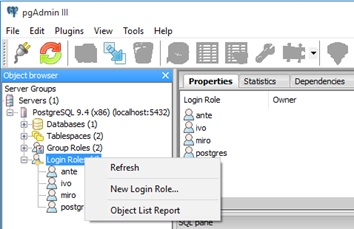
{kind=link}
U pgAdminu pritisnemo desnu tipku miša na Login Roles i odaberemo New Login Role. Nakon toga se otvara novi prozor koji je prikazan na slici ispod. Ovdje se unosi korisničko ime.
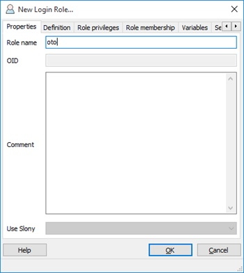
{kind=link}
U tabu Definition postavljamo korisničku lozinku i možemo postaviti datum istjecanja valjanosti tog korisničkog računa.
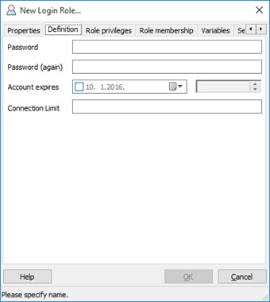
{kind=link}
Na tabu Role Privileges možemo odabrati privilegije koje će imati korisnik. Tu ćemo odabrati Inherits rights from parent roles i Can create databases jer želimo omogućiti da korisnik iz primjera može nasljediti pristup od neke grupe i da ima mogućnost kreiranja svojih baza podataka. Iako korisnik može naslijediti prava od grupe, bitno je znati da se neke privilegije ne nasljeđuju te ih je ručno potrebno označiti ukoliko želimo da ih korisnik ima. Takve privilegije se u službenoj PostgreSQLovoj dokumentaciji nazivaju posebne privilegije i tu spadaju: LOGIN, SUPERUSER, CREATEDB i CREATEROLE.
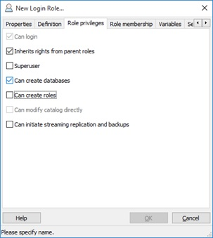
{kind=link}
Na tabu Role membership možemo odabrati kojoj grupi ili grupama će korisnik pripadati. Grupe je potrebno kreirati prije nego kreirano korisnika. Ukoliko se dogodi situacija da ste napravili grupe korisnika, ali se ne vide u ovom koraku potrebno je ponovo pokrenuti pgAdmin. Postupak za kreiranje grupa je gotovo isti kao I za dodavanje korisnika. Nakon toga kliknemo na OK pri dnu prozora i novi korisnik je kreiran.
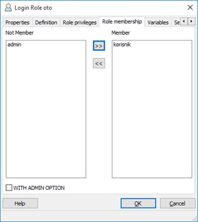
{kind=link}
Sada će se novokreirani korisnik spojiti na bazu podataka. Nakon što je povezivanje uspješno završeno, pomoću naredbe SELECT rolname FROM pg_roles; možemo vidjeti koje sve role postoje na našem serveru.
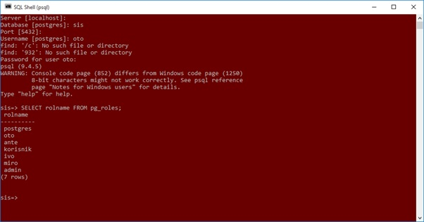
{kind=link}
Podjelom korisnika u grupe onemogućavamo korisnike da rade promjene na tablicama na kojima nemaju prava pristupa. Primjerice ako korisnik1 kreira tablicu t1 korisnik2 nema prava pristupa nad tablicom t2, osim ukoliko mu kosinik1 ta prava ne proslijedi.
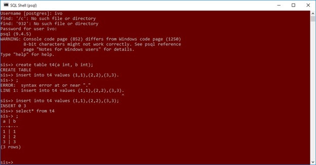
{kind=link}
Na slici iznad vidimo da se korisnik „ivo“ povezao na bazu „sis“ i kreirao tablicu „t4“ i popunio ju nekim podacima.
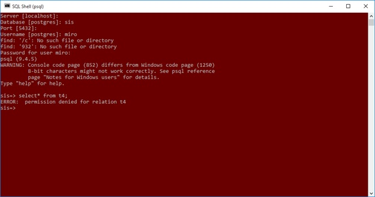
{kind=link}
Sa ove slike vidimo da se korisnik „miro“ povezao na bazu „sis“ i pokušao dohvatiti podatke iz tablice „t4“, ali sustav javlja grešku jer „miro“ nema prava pristupa toj tablici. Vlasnik tablice može pomoću GRANT naredbe dodijeliti prava pristupa na određenom objektu. Ukoliko želimo omogućiti prava pristupa svim korisnicima koji se nalaze u određenoj grupi ne moramo to raditi za svakog korisnika već možemo dati prava pristupa cijeloj grupi.
Transakcije i zaključavanje
Ukoliko imamo više korisnika koji imaju pravo pristupa nad istom tablicom postoji mogućnost da se pojave određene anomalije koje su karakteristične za višekorisnički rad.
Kod PostgreSQL-a zadana razina izolacije je read commited te ju nije potrebno pisati. U primjeru imamo dvije transakcije koje izvode različiti korisnici. Svaki korak koji je naveden možemo vidjeti na slikama ispod ovog odlomka. Prvo se prijavi prvi korisnik koji započne transakciju i napravi select upit nad tablicom t4. Nakon toga se prijavljuje drugi korisnik, započinje transakciju i briše podatke iz tablice t4. Prvi korisnik opet radi select upit nad tablicom t4 i dobiva isti rezultat kao i prvi put. Drugi korisnik izvodi naredbu commit i završava izvođenje transakcije. Prvi korisnik ponovo radi select upit nad tablicom t4 i uviđa promjene koje su se desile, nakon toga izvodi naredbu commit.
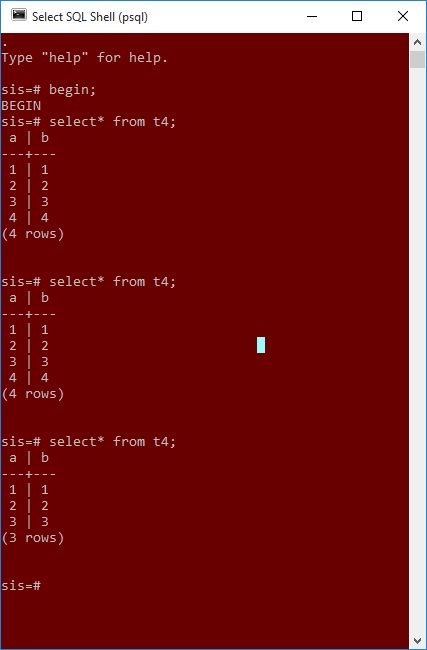
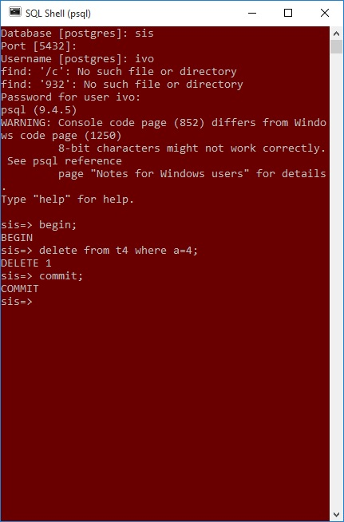
Na drugome primjeru ćemo pokazati kakva je razlika između transakcija koje koriste razinu izolacije serializable. Prva razlika između ovih razina transakcije je u sintaksi. Dok u prvom primjeru nismo eksplicitno morali navesti naziv izolacije, ovdje moramo. Dakle, naredba s kojom započinjemo transakciju je „begin isolation level serializable;“. Nakon što smo pokrenuli transakciju kreiramo select upit nad tablicom t4 iz koje se dohvaćaju podaci. Nakon toga drugi korisnik pokreće drugu transakciju, isto s razinom izolacije serializable, te dodaje dva retka u tablicu. Prvi korisnik izvršava select upit nad tablicom t4, ali ne vidi novo unesene podatke. Drugi korisnik radi commit. Nakon toga prvi korisnik opet pokušava dohvatiti podatke iz tablice t4, ali opet dohvaća iste podatke te radi commit. Na kraju prvi korisnik opet izvršava select upit nad tablicom t4 te dohvaća podatke.
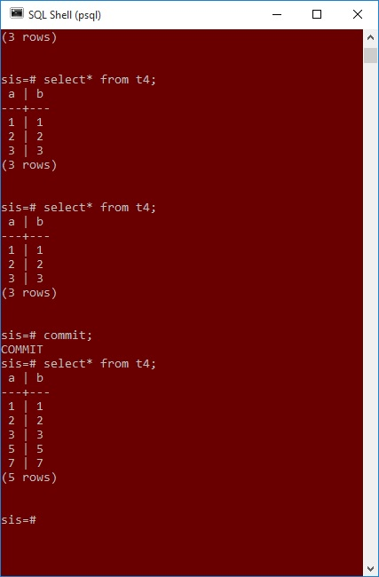
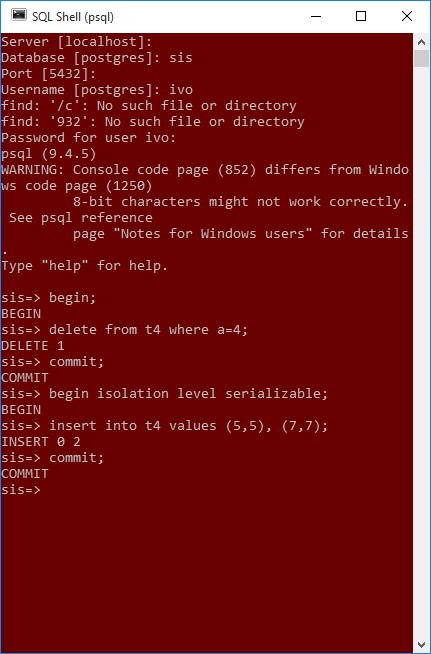
Na kraju ćemo pokazati kako access exclusive zaključavanje blokira select upite nad zaključanom tablicom. Ukoliko imamo jednu tablicu i ona bude zaključana u access exclusive modu, drugi korisnici neće moći napraviti niti select upit sve dok se prva transakcija ne završi, bilo uspješno ili neuspješno. Ukoliko se napravi neki upit nad zaključanom tablicom u access exclusive modu on će čekati sve dok se ne završi prva transakcija. Kod zaključavanja postoji mogućnost da se pojavi problem zastoja tj. deadlocka.
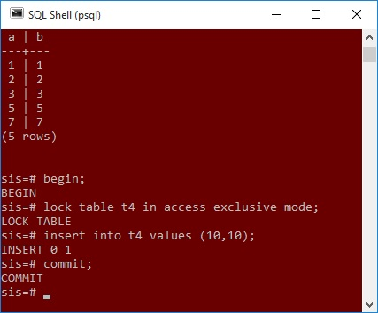
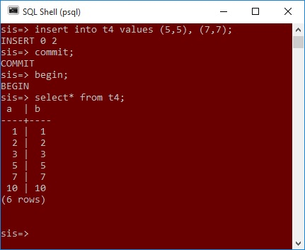
{kind=link}
{kind=link}
{kind=link}
{kind=link}
{kind=link}
{kind=link}
Sigurnosna kopija
Izrada sigurnosne kopije baze podataka. Za početak moramo pokrenuti konzolu kao administrator, ovo je obavezno inače nećemo moći izraditi sigurnosnu kopiju.
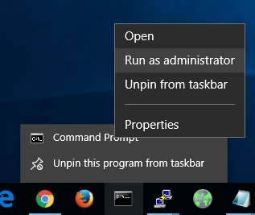
Nakon toga potrebno se pozicionirati u C:\Program Files (x86)\PostgreSQL\9.4\bin te napisati naredbu pg_dump -U <korisnicko_ime> <ime_baze_podataka> > <ime_izlazne_datoteke.sql> pg_dump je ime naredbe, -U omogućava da navedemo ime korisnika s kojim želimo izvršiti naredbu. Konkretno u ovome slučaju naredba bi glasila: pg_dump -U postgres sis > sis1.sql.
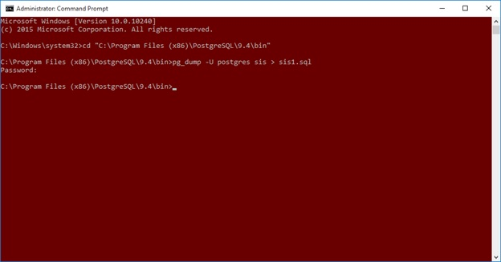
Nakon što smo uspješno izradili sigurnosnu kopiju sada ćemo napraviti novu bazu podataka i u nju uvesti podatke iz sigurnosne kopije.
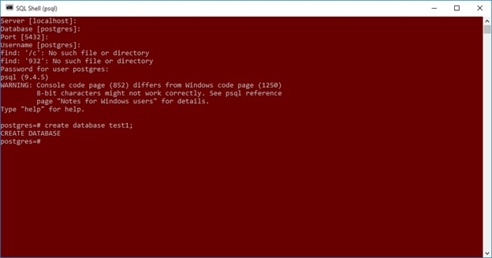
Novu bazu podataka ćemo nazvati test1. Podatke iz postojeće baze podataka ćemo uvesti pomoću naredbe psql -U <korisnicnko_ime> test1 < sis1.sql.
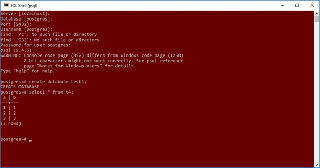
Ukoliko imamo više baza podataka ne ovim načinom bismo morali izrađivati sigurnosne kopije za svaku bazu podataka. Ukoliko imamo cluster baza podataka, dakle više baza podataka na istome serveru, možemo koristiti naredbu pg_dumpall. Primjer jedne takve naredbe je: pg_dumpall > "cluster_backupa.sql". Ukoliko pak želimo učitati podatke iz takve datoteke trebamo koristiti naredbu psql -f "cluster_backupa.sql" postgres. Naravno da bi pokrenuli izvođenje ovih naredbi potrebno je pokrenuti konzolu kao administrator.
{kind=link}
{kind=link}
{kind=link}
{kind=link}
Auditing
Auditing je naziv za nadziranje i pohranjivanje odabranih postupaka korisnika baze podataka. Auditing se fokusira na određene korisničke postupke, poput vrste SQL naredbe ili na kombinaciji više čimbenika poput korisničkog imena, aplikacije, vremena itd.
PostgreSQL podržava više metoda za kreiranje dnevnika tj. logova poput stderr, csvlog, syslog. Kod operacijskog sustava Microsoft Windows podržan je eventlog.
Ukoliko imamo operacijski sustav Microsoft Windows log možemo pronaći na lokaciji Lokacija_gdje_je_sustav_instaliran\PostgreSQL\9.4\data\pg_log ili konkretno u mome slučaju,
C:\Program Files (x86)\PostgreSQL\9.4\data\pg_log.
Na slici ispod možemo vidjeti jedan primjer dnevnika u koji se zapisuju greške koje su se dogodile tokom rada sustava. Ovaj dnevnik se izrađuje tokom jednog dana. Idući dan se greške zapisuju u novi dnevnik. Naravno, to su standardne postavke i moguće ih je podesiti, kao i brojna druga svojstva poput najveće veličine dnevnika i sl.
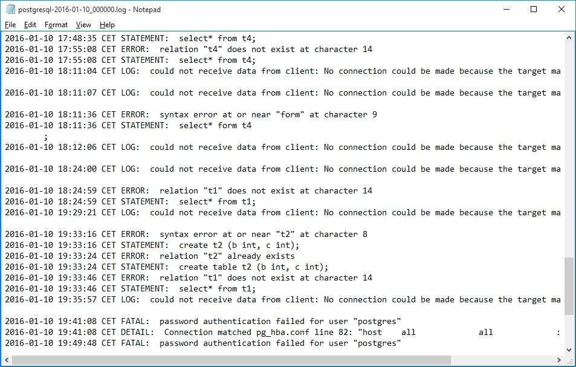
Na slici ispod je prikazan dnevnik iz linux sustava u koji se zapisuju sve aktivnosti koje se događaju na sustavu.
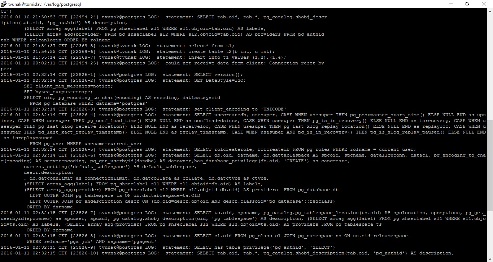
{kind=link}
{kind=link}
Literatura
1. Varga M., Čerić V., Birolla H., (1998). Poslovno računarstvo, Znak, Zagreb
2. Bratanović, M., Zakošek, S., (2007). Baze podataka. Dostupno 27.10.2015. na http://www.fer.unizg.hr/_download/repository/BazePodataka_SQLPredavanja.pdf
3. Date, C. J., (2004). An Introduction to Database Systems (eighth edition).
4. The PostgreSQL Global Development Group, (2014). PostgreSQL 9.4 Documentation Dostupno 27.10.2014 na: http://www.postgresql.org/docs/9.4/static/index.html
5. Oracle (2015) Database Auditing: Security Considerations Dostupno 11.1.2016 na https://docs.oracle.com/cd/B19306_01/network.102/b14266/auditing.htm#CHDJBDHJ
--Tvunak 00:22, 11. siječnja 2016. (CET)